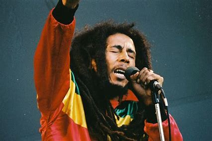

Een muziekgenre is eigenlijk gewoon de soort of stijl van de muziek.
Een paar soorten genres zijn:
pop
Hiernaast zie je de enige echte Michael Jackson. Micheal is toch echt wel een icoon in de pop wereld en dat was zeker wel te merken aan zijn bijnaam 'The King of Pop'. Pop muziek staat eigenlijk voor populaire muziek en gaat dus al een hele tijd mee.
Het is een verzamelnaam geworden voor bekende liedjes. De term pop komt uit de jaren 50 en word tot op de dag van vandaag nogsteeds dagelijks door mensen gebruikt.
rock
De meeste mensen die denken aan het genre rock noemen dan gelijk een paar kenmerkende instrumenten op.
Instrumenten zoals de gitaar, bas en drums. Deze 3 unstrumenten worden dan opgevuld met vocals. Rock is ontstaan in de jaren 60 en is door de jaren heen alleen maar geevalueerd tot tientallen subgenres.
Een paar van die subgenres zijn: Hardrock, Punk, Metal enz.
klassiek
Klassieke muziek... waar moet ik beginnen. Klassieke muziek komt uit de tijd van het classisisme dat ongeveer begon in het jaar 1730. Klassieke muziek word uitgeschreven en dus gecomponeerd. Een paar van de Bekendste componisten zijn toch wel: Back, Mozart en Beethoven.
Deze 3 componisten zijn geboren tussen 1685 en 1770 en hebben de klassieke muziek naar een ander niveau gebracht. Hun muziek word tot op de dag van vandaag nogsteeds beluisterd en gespeeld.
reggae
Hier links zie je Bob Marley, toch wel de bekendste reggae artiest. Reggae is in 1968 gemaakt en afkomstig uit Jamaica. De belangrijkste instrumenten van het genre reggae zijn de bas en de drums die samen het 'Riddim' vormen. De 2 instrumenten worden meestal opgevuld door gitaren, percussie en zang. Wat reggae nou zo uniek maakt is dat de beat een heel klein beetje misplaatst is. Door reggae zijn er een hele hoop artiesten beroemd geworden.